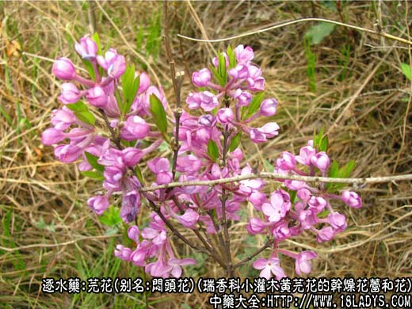
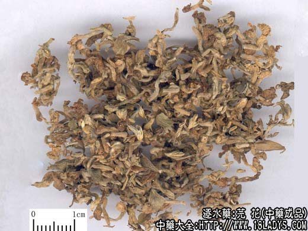
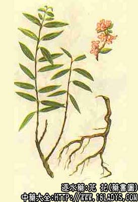

芫花为常用中药。《神农本草经》列为下品。市售商品有芫花和黄芫花两种。
别名：闷头花、头痛花、毒鱼草。
来源：为瑞香科植物落叶小灌木芫花（紫芫花）和（河逆荛花）黄芫花的干燥花蕾和花。均为野生。
产地：芫花：主产于安徽、江苏、湖北、南方各省。
黄芫花：主产于山西、陕西、河北、吉林、辽宁、黑龙江等省。
性状鉴别：1、芫花。为未开放的花蕾或花朵。常3～7朵簇生于一个短柄上，或间有脱落的单一花及叶片。花冠圆筒状或棒状，长1～1.5厘米，灰紫色或灰绿色，密被短柔毛，行端裂为四片，裂片卵圆形，质柔韧。气微，味微辛。外嗅有青辣臭味及刺鼻灼热感，令人头闷头痛。
2、黄芫花。形态与芫花略相似而小，长3～8毫米，直径约1～1.5毫米。上端稍短，下端较细。灰绿色或灰黄色，密被短柔毛。多单花。常带有嫩枝梗。气微香，味微辛。
芫花以花朵较完整，颜色灰紫色或淡紫色无杂质者为佳。
黄芫花以花细小，淡黄色或灰黄色无杂质者为佳。
主要成分：芫花含芫花素、芹叶素，又含谷甾醇和刺激性油状物。
功效与作用：1、泻下。芫花素能刺激肠粘膜，引起剧烈水泻和腹痛。
2、利尿。实验证明芫花煎剂确能利尿。但大剂量反能制尿，应用上，应注意剂量除花蕾外，根皮也能利尿。
炮制：醋制。
性味：苦、寒。有毒。
归经：入肺、脾、肾经。
功能：泻水、逐痰。
主治：痰饮喘咳，水肿胀满。
临床应用：与甘遂同，但逐水效力比甘遂小（毒性亦较小）。
1、用于治疗胸腔积液（渗出性胸膜炎），有气喘上逆、呼吸困难、便秘、少尿、胸胁作痛、脲弦滑者，宜用芫花，配甘遂、大戟，方如十枣汤。适用于平素体质较好的青壮年病人。
2、用于治疗肝硬化腹水，而体质尚好者，可用十枣汤，但疗程要短，不宜久用。
用量：每次0.6～0.9g入散剂。
处方举例：十枣汤（《伤寒论》）：芫花、甘遂、大戟各等分，研末混和，装入胶囊，第一天服1.5g，以后每天加0.3g，渐加至3g，用大枣5～10枚煎汤，清晨空腹送服，疗程不超过5～6天（治胸腔积液）。